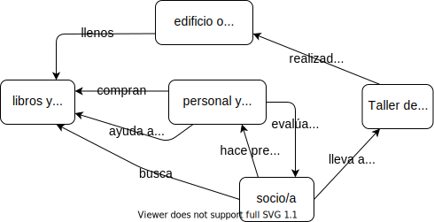
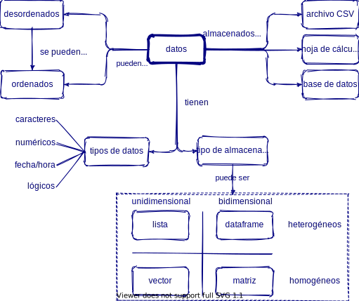
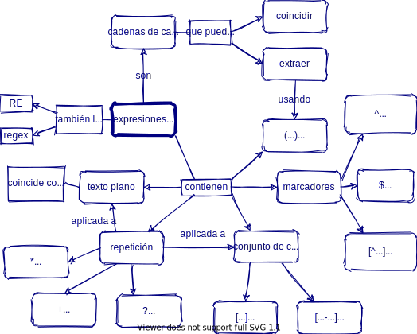

25 Ejemplos de Mapas Conceptuales
Estás leyendo la segunda edición en progreso y en castellano de Enseñar Tecnología en Comunidad (Teaching Tech Together). Este capítulo está siendo objeto de una profunda reestructuración y puede resultar confuso o incompleto
En los capítulos Chapter 4 y Chapter 3 hablamos de modelos mentales y mapas conceptuales. En este anexo compartimos varios ejemplos.
25.1 Diferentes mapas para el mismo concepto
Esta serie de tres mapas conceptuales, creados por Amy Hodge y reutilizados con su permiso, son un ejemplo de diferentes modelos mentales para un mismo tema.


![Mapa conceptual desde el punto de vista de los/las amigos/as de la biblioteca: Los/las amigos/as de la biblioteca realizan las ventas de libros que generan fondos. Estos fondos se usan para pagar el mantenimiento y mejoras de las instalaciones y para pagar la realización de programas que apoyan a los socios/as y a la comunidad. Algunos/as de estos/as socios/as son parte de los/as amigos/as de la biblitoeca y también participan en las ventas de libros. El personal de la biblioteca es consultado por los socios/as sobre las instalaciones y los programas disponibles en la biblioteca.](diagrams/library-friends-concept-map.svg)
25.2 Mapas conceptuales sobre Ciencia de Datos
Esta serie de mapas conceptuales presentan modelos mentales utilizados en lecciones de introducción a la ciencia de datos y fueron generados por diversos instructores certificados de RStudio (ahora Posit) y compartidos bajo licencia CC-BY. La colección completa se puede acceder en <FIXME: ver de linkear al repo de Greg https://github.com/rstudio/concept-maps.>

